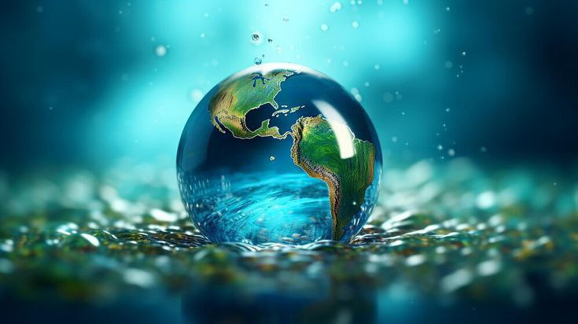
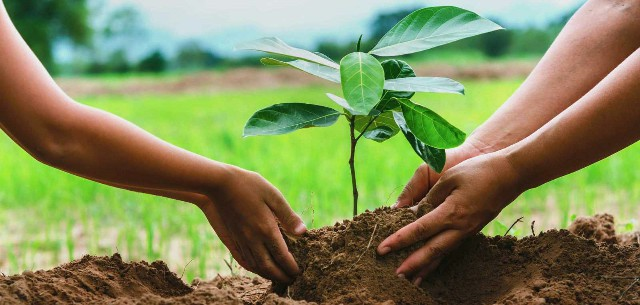
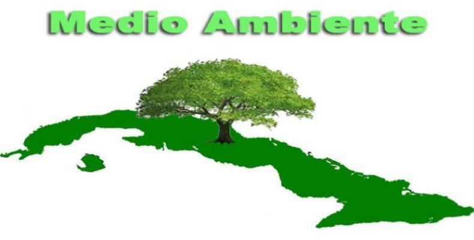

Tarea Vida 2021-2025
La "Tarea Vida" es un plan de estado para el enfrentamiento al cambio climático en la República de Cuba. Este plan se centra en la mitigación de las emisiones de gases de efecto invernadero y en la adaptación a los cambios climáticos ya en curso, con el objetivo de proteger la vida humana y el medio ambiente. La "Tarea Vida" incluye un programa de inversiones progresivas a corto, mediano, largo y muy largo plazo, y se conforma por 5 acciones estratégicas y 11 tareas específicas. Este plan refleja el compromiso de Cuba con la lucha contra el cambio climático y la promoción de un desarrollo sostenible, alineándose con los Objetivos de Desarrollo Sostenible (ODS) de las Naciones Unidas, especialmente el ODS 13, que busca combatir el cambio climático y sus efectos.

Acciones Estratégicas
- No permitir construcciones nuevas viviendas en asentamientos costeros amenazados que se pronostican desaparecerán por inundación permanente y los más vulnerables.
- Adaptar las actividades agropecuarias, en particular las de mayor incidencia en la seguridad alimentaria del país, a los cambios en el uso del suelo como consecuencia de la elevación del nivel del mar y la sequía.
- Reducir la densidad demográfica en las zonas bajas costeras.
- Desarrollar concepciones constructivas en infraestructura, adaptadas a las inundaciones costeras para las zonas bajas.
- Reducir las áreas de cultivos próximas a la costa afectadas por la intrusión salina. Diversificar los cultivos, mejorar las condiciones de los suelos, introducir y desarrollar variedades resistentes al nuevo escenario de temperaturas.
Tareas Específicas
- Identificar y acometer acciones y proyectos de adaptación al cambio climático, de carácter integral y progresivos, necesarios para reducir la vulnerabilidad existente en las 15 zonas identificadas como prioritarias.
- Implementar las normas jurídicas necesarias para respaldar la ejecución del Plan de Estado; así como asegurar su estricto cumplimiento, con particular atención en las medidas encaminadas a reducir la vulnerabilidad del patrimonio construido, priorizando los asentamientos costeros amenazados.
- Conservar, mantener y recuperar integralmente las playas arenosas del archipiélago cubano, priorizando las urbanizadas de uso turístico y reduciendo la vulnerabilidad estructural del patrimonio construido.
- Asegurar la disponibilidad y uso eficiente del agua como parte del enfrentamiento a la sequía, aparte de la aplicación de tecnologías para la captación y satisfacción de las demandas locales. Elevar la infraestructura hidráulica y su mantenimiento, así como introducir acciones para medir la eficiencia y productividad del agua.
- Dirigir la reforestación hacia la máxima protección de los suelos y las aguas en cantidad y calidad; así como al reciclaje de los manglares más afectados. Priorizar los embalses, canales y franjas hidrorreguladoras de las cuencas tributarias de las principales bahías y de la costa de la plataforma insular.
- Detener el deterioro, rehabilitar y conservar los arrecifes de coral de todo el archipiélago, con prioridad en las crestas que bordean la plataforma insular y protegen playas urbanizadas de uso turístico. Evitar la sobrepesca de especies que favorecen los corales.
- Mantener e introducir en los planes de ordenamiento territorial y urbano los resultados científicos del Macroproyectos sobre Peligros y Vulnerabilidad de la zona costera (2050-2100); así como los Estudios de Peligro, Vulnerabilidad y Riesgo en el ciclo de reducción de desastres. Emplear esta información como alerta temprana para la toma de decisiones por parte de los OACE, OSDE, EN, CAP y CAM.
- Implementar el control de las medidas de adaptación y mitigación al cambio climático derivadas de las políticas sectoriales en los programas, planes y proyectos vinculados a la seguridad alimentaria, la energía renovable, la eficiencia energética, el ordenamiento territorial y urbano, la pesca, la agricultura, la salud, el turismo, la construcción, el transporte, la industria y el manejo integral de los bosques.
- Fortalecer los sistemas de monitoreo, vigilancia y alerta temprana para evaluar sistemáticamente el estado y calidad de la zona costera, el agua, la sequía, el bosque, la salud humana, animal y vegetal.
- Priorizar las medidas y acciones para elevar la percepción del riesgo y aumentar el nivel de conocimiento y el grado de participación de toda la población en el enfrentamiento al cambio climático y una cultura que fomente al ahorro del agua.
- Gestionar y utilizar los recursos financieros internacionales disponibles, tanto los provenientes de fondos climáticos globales y regionales, como los de fuentes bilaterales; para ejecutar las inversiones, proyectos y acciones que deriven de cada una de las Tareas de este Plan de Estado.
Antecedentes
La evolución de la "Tarea Vida" en Cuba,se puede rastrear a través de varios hitos importantes que reflejan el compromiso del país con la lucha contra el cambio climático y la promoción de un desarrollo sostenible. Aunque la "Tarea Vida" como tal fue formalmente lanzada en 2017, el interés y las acciones relacionadas con la sostenibilidad y la adaptación al cambio climático tienen raíces más profundas en la historia de Cuba. Aquí se presenta un resumen de los eventos clave:
Cronología
1976
Inicio de la Revolución Cubana, marcando el comienzo de un período de intensa actividad política y social que sentaría las bases para futuras iniciativas de sostenibilidad y desarrollo sostenible.
1991
Caída de la Unión Soviética y el inicio del "Periodo Especial". La economía cubana entra en una crisis debido a la pérdida de subsidios y mercados, lo que lleva a una reevaluación de las estrategias de desarrollo y sostenibilidad.
1993
Agravación de la crisis económica y social, con recortes en servicios básicos y un aumento en el flujo migratorio. Durante este tiempo, Cuba comienza a buscar nuevas formas de diversificar su economía y reducir su dependencia de la ayuda externa.
1993
Agravación de la crisis económica y social, con recortes en servicios básicos y un aumento en el flujo migratorio. Durante este tiempo, Cuba comienza a buscar nuevas formas de diversificar su economía y reducir su dependencia de la ayuda externa.
2004
Después de los huracanes Charley e Iván, se intensifican los estudios de peligro, vulnerabilidad y riesgo territorial para la reducción de desastres, marcando un paso importante en la preparación y adaptación al cambio climático.
2007
Priorización de investigaciones científico-tecnológicas para abordar los desafíos ambientales y climáticos, incluyendo el Macroproyecto sobre peligros y vulnerabilidades costeras para los años 2050-2100.
2011
Aprobación de directivas basadas en los resultados científicos y las recomendaciones del Macroproyecto, reflejando un enfoque más sistemático y estratégico en la adaptación al cambio climático.
2017
Lanzamiento oficial de la "Tarea Vida", Plan de Estado para el enfrentamiento al cambio climático, que incluye un programa de inversiones y acciones estratégicas para la mitigación y adaptación al cambio climático.
2017-2020
Este periodo inicial, denominado "corto plazo", marcó el inicio de la implementación de la "Tarea Vida". Durante este tiempo, se realizaron esfuerzos significativos para poner en marcha las acciones estratégicas y tareas definidas en el plan. Los resultados de este ciclo inicial fueron presentados y evaluados en abril de 2021, destacando los avances realizados a nivel nacional y local, así como identificando áreas estratégicas donde se requerían intensificar los esfuerzos.
2021-2025
Para este nuevo ciclo de trabajo, las proyecciones de la "Tarea Vida" se han diseñado teniendo en cuenta los resultados y desafíos identificados en la etapa anterior. Las prioridades para este periodo incluyen la protección de la vida humana y su calidad, el cuidado del patrimonio económico y natural, la seguridad alimentaria y el turismo. Este ciclo se basa en los avances más recientes de la ciencia cubana, especialmente en el Macroproyecto sobre "Escenarios de peligro y vulnerabilidad de la zona costera cubana, asociados al ascenso del nivel medio del mar para los años 2050 y 2100", que se actualiza anualmente.
Proyecto de adaptación al cambio climático
Agenda 2021-2025
El Proyecto de Adaptación al Cambio Climático "Agenda 2021-2025" en Cuba se centra en enfrentar los desafíos del cambio climático y promover un desarrollo sostenible. Este proyecto se basa en las proyecciones y análisis realizados por la ciencia cubana, que identifica la necesidad de adaptarse a un clima tropical subhúmedo, caracterizado por una ampliación de la estación seca, un aumento de las temperaturas promedio anual y mínimas y máximas, y cambios en el régimen de precipitación, entre otros factores.
Acciones Estratégicas
- Implementar y controlar medidas de adaptación y mitigación al cambio climático derivadas de políticas sectoriales en programas, planes y proyectos vinculados a seguridad alimentaria, energía renovable, eficiencia energética, ordenamiento territorial y urbano, pesca, agricultura, salud, turismo, construcción, transporte, industria y manejo integral de los bosques. Esto incluye incrementar la generación de electricidad a partir de fuentes renovables y evitar la emisión de millones de toneladas de CO2 a la atmósfera.
- Reducir las brechas de desigualdades territoriales y sociales en el enfrentamiento al cambio climático, considerándolas en el diseño de políticas públicas y estrategias de adaptación y mitigación. Esto implica fortalecer el conocimiento, la sensibilización y la participación de la población en el enfrentamiento al cambio climático.
- Identificar y acometer acciones y proyectos de adaptación al cambio climático para reducir la vulnerabilidad existente en zonas identificadas como prioritarias, considerando la población amenazada, su seguridad física y alimentaria, y el desarrollo del turismo.
- Conservar, mantener y recuperar integralmente las playas arenosas del archipiélago cubano, priorizando las urbanizadas de uso turístico y reduciendo la vulnerabilidad estructural del patrimonio construido.
- Favorecer la captación de datos desagregados y la implementación de un sistema de información georreferenciado para crear perfiles de los sectores, ecosistemas, territorios y comunidades más vulnerables, facilitando la implementación de acciones y estrategias más eficaces y eficientes.
Tarea Vida 2021-2025
Las Proyecciones Tarea Vida para el período 2021-2025 en Cuba se centran en enfrentar los desafíos del cambio climático y promover un desarrollo sostenible, basándose en los avances científicos y los compromisos internacionales del país.
Proyecto de adaptación al cambio climático
Antecedentes y resultados de la ciencia cubana
Estado del Clima y Futuro Climático: La ciencia cubana ha establecido que el clima en Cuba se encuentra en una fase de transición de un clima tropical húmedo a uno tropical subhúmedo, caracterizado por la ampliación de la estación seca, el aumento de las temperaturas, la disminución de la humedad del aire y cambios en el régimen de precipitación, entre otros factores.
Objetivos y Metas
- Hasta 2021: Se enfocó en el fortalecimiento de la educación, la sensibilización y la participación ciudadana en el enfrentamiento al cambio climático, así como en la realización de la estimación de las principales necesidades financieras en materia de adaptación y mitigación.
- Hasta 2025: Se espera incrementar la financiación por la vía de proyectos internacionales de adaptación y mitigación, así como aumentar la percepción social en materia de enfrentamiento al cambio climático. Además, se desarrollarán estrategias financieras integradas y se identificarán las necesidades de financiamiento para cumplir con los objetivos nacionales en materia de mitigación y adaptación.
Acciones y Tareas Específicas
- Identificación y Acometimiento de Acciones y Proyectos de Adaptación: Se priorizarán acciones y proyectos para reducir la vulnerabilidad en zonas identificadas como prioritarias, considerando la población amenazada, su seguridad física y alimentaria, y el desarrollo del turismo.
- Conservación y Recuperación Integral de Playas Arenosas: Se priorizarán las playas urbanizadas de uso turístico y se reducirá la vulnerabilidad estructural del patrimonio construido.
Compromisos Internacionales
- Convención Marco de las Naciones Unidas sobre el Cambio Climático y el Acuerdo de París: Cuba se compromete a adoptar medidas urgentes para combatir el cambio climático y sus efectos, alineándose con los Objetivos de Desarrollo Sostenible (ODS), especialmente el ODS 13.
Actualización de la Contribución Nacionalmente Determinada (CND)
- La CND de Cuba se actualizó en 2020, reflejando el compromiso del país con la reducción de las emisiones de gases de efecto invernadero y la adaptación al cambio climático a nivel global.
La Agencia del Medio Ambiente en Cuba
Es una organización del Ministerio de Ciencia, Tecnología y Medio Ambiente (CITMA). Su función principal es proponer y enseñar las diferentes vías y estrategias fundamentales del gobierno para el medio ambiente. Fue creada con el objetivo de ejecutar y participar como observador y rector en diferentes proyectos científicos y tecnológicos, además de elaborar las estrategias utilizadas a nivel nacional en materia ecológica. La AMA es consultada por el Estado para la elaboración de leyes u otros documentos de carácter jurídico en materia ambiental y administra un grupo de empresas subordinadas para cumplir con su cometido.
La agencia tiene diferentes centros e instituciones que se encargan de dividir su trabajo en diferentes categorías, incluyendo el Instituto de Meteorología, Instituto de Oceanología, Instituto de Ecología y Sistemática, Instituto de Geofísica y Astronomía, Instituto de Geografía Tropical, Centro de Bioproductos Marinos, Acuario Nacional, Parque Zoológico Nacional, Museo Nacional de Historia Natural, Oficina Técnica de Ozono, y el Proyecto GEF/PNUD Archipiélago Sabana-Camagüey.
Fundada el 6 de marzo de 1995, la Agencia de Medio Ambiente aporta conocimientos científicos y técnicos, y ofrece servicios especializados para el ordenamiento y manejo de los recursos naturales, la conservación y rehabilitación de ecosistemas, la prevención y evaluación de desastres naturales, y la adaptación al cambio climático en función de lograr un desarrollo económico y social sustentable, y fomentar una cultura ambiental en la población.
La AMA tiene como campo de enfoque la gestión de recursos naturales, la conservación de ecosistemas, el desarrollo económico y social sostenible, y la adaptación al cambio climático. Está subordinada a varias instituciones, incluyendo el Instituto de Meteorología, Instituto de Oceanología, Instituto de Ecología y Sistemática, Instituto de Geografía Tropical, Instituto de Geofísica y Astronomía, Acuario Nacional de Cuba y Museo Nacional de Historia Natural.
El cambio climático
El cambio climático se refiere a los cambios a largo plazo en las temperaturas y los patrones climáticos de la Tierra. Estos cambios pueden ser naturales, como variaciones en la actividad solar o erupciones volcánicas grandes. Sin embargo, desde el siglo XIX, las actividades humanas han sido el principal motor del cambio climático, principalmente debido a la quema de combustibles fósiles como el carbón, el petróleo y el gas. La quema de estos combustibles genera emisiones de gases de efecto invernadero que actúan como una manta que envuelve a la Tierra, atrapando el calor del sol y elevando las temperaturas. Las emisiones principales de gases de efecto invernadero que provocan el cambio climático son el dióxido de carbono y el metano, que proceden de diversas actividades humanas como el uso de la gasolina para conducir un coche, el carbón para calentar un edificio, el desmonte de tierras y bosques, y actividades relacionadas con el petróleo y el gas. Además, la agricultura y el uso del suelo son fuentes importantes de emisiones de metano.
Es importante distinguir entre el cambio climático y el calentamiento global. El calentamiento global indica el aumento de la temperatura media de la Tierra, propiciado por el efecto invernadero, es decir, el que es originado por la emisión de gases contaminantes a la atmósfera. El cambio climático, por otro lado, incluye el calentamiento global y todos los demás efectos que produce el aumento de los niveles de gases de efecto invernadero, como la modificación de los patrones de lluvia, el aumento del nivel del mar, la reducción de la superficie cubierta por nieves y glaciares, y el aumento de la frecuencia y severidad de tormentas y sequías.
El cambio climático representa uno de los grandes retos del siglo XXI, ya que los esfuerzos de adaptarse a las nuevas condiciones climáticas e instrumentar los procesos de mitigación de los gases de efecto invernadero son de tal magnitud que será un condicionante para el estilo de desarrollo futuro. Los impactos del cambio climático son significativos, crecientes y, en muchos casos, irreversibles en las actividades económicas, la población y los ecosistemas, lo que subraya la necesidad de acciones coordinadas a nivel global para combatirlo.
Proyección Estratégica
Bajo el principio de que el Plan de Estado debe constituir, cada vez más, el instrumento de trabajo rector de todas las acciones que en el país se realizan para el enfrentamiento del cambio climático, se propone que las proyecciones al mediano plazo consideren: lograr una acción coherente e integrada, que tome debidamente en cuenta los resultados de la ciencia, el estado del medio ambiente y sus tendencias evolutivas, así como las necesidades de la sociedad, en todos sus niveles territoriales y formas de organización.
Se trata de un proceso en curso, que requerirá esfuerzos adicionales en el período actual de trabajo. Es imperativo que las decisiones de desarrollo estén en correspondencia con los impactos actuales del clima y más aún los escenarios climáticos. El nuevo ciclo del Plan de Estado, calificado como mediano plazo (2021-2030), aumentará el rigor de la planificación, e identificará con mayor claridad las medidas más efectivas, incluyendo su evaluación en términos sociales y económicos. El impacto de la pandemia de la COVID 19, refuerza la necesidad de un enfoque renovado, más integrador y estratégico en la evaluación de los avances y retos en la implementación del Plan de Estado para el enfrentamiento al cambio climático, con vistas a lograr una recuperación más verde, de manera que la crisis generada por la pandemia se convierta en una oportunidad para avanzar en desarrollo ambientalmente sostenible. Con una severa constricción de los recursos financieros disponibles, es necesario ser más eficientes que nunca en las medidas que se tomen respecto al cambio climático, así como introducir nuevos mecanismos económicos financieros que permitan movilizar una mayor cantidad de recursos.
Objetivo general y objetivos específicos
Objetivo General
Alcanzar un estadio superior en la implementación del Plan de Estado para el Enfrentamiento al Cambio Climático (Tarea Vida), a partir del conocimiento científico, que contribuya a la construcción de un modelo de desarrollo que sea resiliente y bajo en emisiones de gases de efecto invernadero, en el contexto de las prioridades económicas y sociales del país.


Objetivos Específicos
- Contribuir a implementar lo establecido en los documentos resultantes del VIII Congreso del PCC y los Ejes Estratégicos y Objetivos del PNDES 2030, relevantes a la implementación del Plan de Estado.
- Evaluar sistemáticamente la marcha de la implementación del Plan de Estado, a nivel sectorial y territorial, en su interrelación con los avances de la ciencia nacional y el desarrollo económico y social del país.
- Considerar en su implementación la recuperación de los impactos de la pandemia de la COVID 19.
- Reducir las brechas de desigualdades territoriales y sociales que se experimentan en el enfrentamiento al cambio climático considerándolas en el diseño de políticas públicas y en las estrategias de adaptación y mitigación.
- Favorecer la captación de datos desagregados y la implementación de un sistema de información georreferenciado, para crear perfiles de los sectores, ecosistemas, territorios y comunidades más vulnerables, en términos de necesidades diferenciadas, de manera que las acciones y estrategias sean más eficaces y eficientes, y se acerquen a las realidades heterogéneas de los territorios.
- Fortalecer el conocimiento, la sensibilización, y la participación de la población ante los impactos negativos del cambio climático, que permita incrementar la resiliencia, la participación ciudadana, la equidad y la responsabilidad de la sociedad cubana.
Líneas de acción prioritarias

Lineamientos
- Fortalecimiento de la institucionalidad y la gobernanza climáticas, incluyendo el marco legal, las capacidades de gestión y los arreglos institucionales para el funcionamiento de la Tarea Vida.
- Perfeccionamiento de los planes nacionales y territoriales de adaptación y mitigación, con enfoque de género, en toda la estructura y escalas de la sociedad cubana, garantizando la inclusión de los resultados y recomendaciones de la ciencia; el enfoque integrado a nivel intersectorial y transectorial y la participación plena de la sociedad en la gobernanza climática, para lograr beneficios diferenciados según las prioridades sectoriales y territoriales, en el orden ambiental, económico y social.
- Fortalecimiento en correspondencia con los estudios de costo efectividad que se requieran- el empleo de las Soluciones Basadas en la Naturaleza, y la consideración del valor de los bienes y los servicios de los ecosistemas, en la implementación de estas Proyecciones, considerando también las interrelaciones con el “Decenio para la Restauración de los Ecosistemas”.
- Consolidación de un modelo inclusivo local para la gestión de los recursos naturales y el enfrentamiento al cambio climático.
- Formulación de estrategias de largo plazo a partir de la internalización del concepto de un “desarrollo más bajo en carbono”, expresado en el PNDES 2030.
- Profundización de los procesos de coordinación de los sistemas nacionales con los territorios y el nivel local en general.
- Consistencia de las acciones con otras políticas ambientales y para la sostenibilidad del desarrollo, en particular, las relacionadas con las modalidades de consumo y producción sostenibles, la Producción Más Limpia, la eficiencia en el uso de recursos y la promoción de la economía circular.
- Inclusión en todos los sectores y territorios los análisis y nexos con la Estrategia “Una sola Salud”, desde el ámbito de la salud poblacional, los sistemas y servicios de salud.
- Desarrollo de estrategias financieras integradas, lo cual incluye la identificación de las necesidades de financiamiento para cumplir con los objetivos nacionales y territoriales en materia de mitigación y adaptación y el fortalecimiento de capacidades para la formulación de proyectos bancables.
- Desarrollo de instrumentos económicos y financieros de manera consistente con las Bases del Plan Nacional de Desarrollo Económico y Social, incluyendo la evaluación de opciones de fondos nacionales, líneas de créditos, seguros, tributos y otros mecanismos que puedan aplicarse en materia de enfrentamiento al cambio climático
Acciones Estratégicas
- Planificar en los plazos determinados los procesos dereordenamiento urbano de los asentamientos e infraestructuras amenazadas, en correspondencia con las condiciones económicas del país. Comenzar por medidas de menor costo, como soluciones naturales inducidas (recuperación de playas, reforestación).
Responsable: Instituto de Planificación Física
Resultado Esperado: Establecido (2023) Programa para la resiliencia climática en los procesos de construcción en el país, que considere los materiales empleados y las técnicas y tipologías constructivas, incluyendo las normas técnicas de obligatorio cumplimiento, que garanticen construcciones resilientes, saludables y más eficientes energéticamente, considerando también la arquitectura bioclimática. - Reducir las áreas de cultivos próximas a las costas o afectadas por la intrusión salina. Diversificar los cultivos, mejorar las condiciones de los suelos, introducir y desarrollar variedades resistentes al nuevo escenario de temperaturas.
Responsable: Ministerio de Agricultura
Resultado Esperado: Adaptar las actividades agropecuarias, en particular las de mayor incidencia en la seguridad alimentaria del país, a los cambios en el uso de la tierra como consecuencia de la elevación del nivel del mar y la sequía. - Desarrollar concepciones constructivas en la infraestructura, adaptadas a las inundaciones costeras para las zonas bajas
Responsable: Ministerio de Construcción
Resultado Esperado: Incrementada la superficie agrícola beneficiadas con medidas y nuevas tecnologías a través del Programa Nacionalde Conservación y Mejoramiento de Suelos, respecto a la superficie agrícola cultivable del país, con el propósito de garantizar el manejo sostenible de los suelos.
Tareas del Plan de Estado
El Plan de Estado sobre la "Tarea Vida" en Cuba para el período 2021-2025 se centra en la adaptación y mitigación del cambio climático, con el objetivo de proteger la vida humana y el medio ambiente. Aunque no se dispone de detalles específicos sobre las tareas del plan para este período exacto, se pueden inferir algunas acciones clave basadas en los principios y objetivos generales de la "Tarea Vida" y las estrategias de adaptación y mitigación comúnmente asociadas con los planes de acción contra el cambio climático.
Tareas
- Implementación de Políticas y Estrategias de Mitigación: Desarrollar y aplicar políticas y estrategias para reducir las emisiones de gases de efecto invernadero, incluyendo la transición hacia fuentes de energía renovable, la mejora de la eficiencia energética y la promoción de prácticas agrícolas sostenibles.
- Adaptación a los Cambios Climáticos: Implementar medidas para adaptarse a los cambios climáticos ya en curso, como la elevación del nivel del mar, la alteración de los patrones de precipitación y el aumento de las temperaturas. Esto podría incluir la protección de áreas costeras, la mejora de la infraestructura para resistir eventos climáticos extremos y la diversificación de las fuentes de agua.
- Educación y Concienciación Ambiental: Promover la educación ambiental y la concienciación sobre el cambio climático entre la población cubana, fomentando comportamientos sostenibles y la participación activa en la protección del medio ambiente.
- Investigación y Monitoreo: Realizar investigaciones científicas y monitorear regularmente el estado del medio ambiente y los impactos del cambio climático, para informar las decisiones políticas y estratégicas.
- Colaboración Internacional: Colaborar con otras naciones y organizaciones internacionales en esfuerzos de mitigación y adaptación al cambio climático, aprovechando las oportunidades de financiamiento y asistencia técnica.
- Gestión de Recursos Naturales: Implementar prácticas de gestión sostenible de los recursos naturales, incluyendo la conservación de la biodiversidad, la gestión de los bosques y la protección de los ecosistemas costeros y marinos.
- Promoción de la Economía Verde: Fomentar el desarrollo de una economía verde, que integre la protección del medio ambiente con el crecimiento económico, creando empleo y bienestar a través de industrias sostenibles y prácticas empresariales verdes.
Glosario
Glosario
- Adaptación al cambio climático: Acciones y estrategias para ajustarse a los impactos actuales y futuros del cambio climático, minimizando los daños y aprovechando las oportunidades.
- Agricultura sostenible: Prácticas agrícolas que protegen el medio ambiente y garantizan la seguridad alimentaria a largo plazo.
- Biodiversidad: La variedad de especies de plantas y animales en un determinado hábitat o ecosistema.
- Cambio climático: Se refiere a los cambios a largo plazo en los patrones climáticos globales y regionales, impulsados principalmente por las actividades humanas que aumentan las emisiones de gases de efecto invernadero.
- Contaminación: Presencia de sustancias o elementos dañinos en el ambiente, que afectan negativamente a la salud y el ecosistema.
- Deforestación: Pérdida de bosques y selvas debido a la tala, quema u otros usos del suelo.
- Desarrollo sostenible: Se refiere al desarrollo que satisface las necesidades del presente sin comprometer la capacidad de las generaciones futuras de satisfacer las suyas.
- Economía baja en carbono: Modelo económico que busca reducir las emisiones de gases de efecto invernadero.
- Economía circular: Un modelo económico que busca minimizar los residuos y el uso de recursos, reutilizando, reparando, refabricando y reciclando materiales y productos existentes.
- Eficiencia de los recursos: Uso eficiente y sostenible de los recursos naturales, minimizando el desperdicio y maximizando su reutilización.
- Eficiencia energética: La reducción del consumo de energía necesaria para satisfacer las mismas necesidades o servicios.
- Educación ambiental: Procesos educativos orientados a desarrollar conciencia, conocimientos y habilidades para proteger el medio ambiente.
- Energías renovables: Fuentes de energía que se regeneran de manera natural y continua, como la energía solar, eólica, geotérmica e hidroeléctrica.
- Gestión de residuos: Conjunto de actividades y estrategias para recolectar, tratar y disponer adecuadamente los desechos.
- Huella de carbono: La cantidad total de emisiones de gases de efecto invernadero generadas por las actividades de una persona, organización, evento o producto.
- Justicia climática: Abordaje equitativo de los impactos del cambio climático, priorizando a los más vulnerables.
- Mitigación del cambio climático: Acciones para reducir las emisiones de gases de efecto invernadero y aumentar los sumideros de carbono para limitar el calentamiento global.
- Objetivos de Desarrollo Sostenible (ODS): Los 17 objetivos globales adoptados por la ONU para lograr un futuro sostenible para todos.
- Reducción, reutilización y reciclaje (3R): Estrategias para reducir, reutilizar y reciclar los residuos con el fin de minimizar el impacto ambiental.
- Resiliencia climática: Capacidad de los sistemas naturales y humanos de anticipar, adaptarse y recuperarse de los impactos del cambio climático.
- Seguridad alimentaria: Acceso físico, social y económico a alimentos suficientes, inocuos y nutritivos.
- Transición energética: Cambio gradual de los sistemas energéticos basados en combustibles fósiles hacia sistemas basados en energías renovables.
Metas
Hasta 2021
- Fortalecimiento de la educación, la sensibilización y la participación ciudadana en el enfrentamiento al cambio climático: Establecer metodologías y realizar la estimación de las principales necesidades financieras en materia de adaptación y mitigación.
- Incrementada la financiación por la vía de proyectos internacionales de adaptación y mitigación: Partiendo de 2021 como año base, se busca incrementar la financiación para proyectos internacionales relacionados con la adaptación y mitigación del cambio climático.
- Incremento de la percepción social en materia de enfrentamiento al cambio climático: Mejorar la conciencia y la participación ciudadana en las acciones contra el cambio climático.
Hasta 2025
- Desarrollo de estrategias financieras integradas: Identificar las necesidades de financiamiento para cumplir con los objetivos nacionales en materia de mitigación y adaptación, y fortalecer las capacidades para la formulación de proyectos bancables.
- Incremento en la resiliencia y una disminución relativa de las emisiones: Se espera constatar un aumento en la resiliencia y una disminución relativa de las emisiones, en línea con los planes de desarrollo económico y social del país, estimado de manera general por sectores y territorios.
Hasta 2030
- Construcción de un marco de indicadores que permitan reflexionar de manera agregada y sintética el progreso nacional hacia una sociedad resiliente y baja en emisiones: Se diseñarán e implementarán dos indicadores agregados para captar información que refleje la resiliencia adecuada a las condiciones nacionales y locales, y el progreso hacia una sociedad baja en emisiones.
Sitios de Interés
Citas
Contactos
Diseñado por:
Diana Rosa Milanés Fonseca
Email:
dianarosamillan775@gmail.com
Móvil:
+53 56 19 44 23
Tutor:
Dr.C. Juan Antonio Plasencia Soler
Email:
jaunps@uci.cu
Tutor:
Ing. Alain Cruz Jiménez
Email:
alaincj@uci.cu
Tutor:
Mr.C. Lieen Domínguez Díaz
Email:
lieen@uci.cu